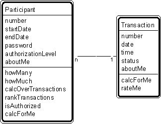

Patt#3. "Participant-Transaction" Pattern // transaction patterns

Typical object interactions
- howMany --> calcForMe
- howMuch --> calcForMe
- calcOverTransactions --> calcForMe
- rankTransactions --> rateMe
Examples
- Participant: agent, applicant, buyer, cashier, clerk, client, civilian, customer, dealer, delegate, distributor, donor, employee, investor, manufacturer, member, officer, official, order clerk, owner, participant, policy holder, professional, prospect, recipient, retailer, sales clerk, sales rep, shipper, student, subscriber, supervisor, supplier, suspect, teacher, wholesaler, worker.
- Transaction: agreement, assignment, authorization, contract, delivery, deposit, incident, inquiry, order, payment, problem, report, purchase, refund, registration, rental, reservation, sale, shift, shipment, subscription, time charge, title, withdrawal.
Combinations
Patt#2. "Actor-Participant"
Patt#3. "PatternParticipant-Transaction"
Patt#4. "Place-Transaction"
Patt#5. "Specific Item - Transaction"
Patt#6. "Transaction - Transaction Line Item"
Patt#7. "Transaction - Subsequent Transaction."
Related strategies:
Str#14. "Select Participants" Strategy
Str#17. "Select Transactions" Strategy
Str#34. "Select Kinds of Objects" Strategy
Str#52. "Establish Actor and Participant Attributes" Strategy
Str#54. "Establish Transaction Attributes" Strategy
Str#74. "Establish Actor and Participant Object Connections" Strategy
Str#76. "Establish Transaction Object Connections" Strategy
Str#94. "Establish Actor and Participant Services" Strategy
Str#96. "Establish Transaction Services" Strategy